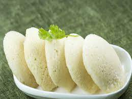

It's Idli Day

Idli is one of the most healthiest and popular South Indian breakfast dish.
These are soft, light, fluffy steamed round cake made with a ground, fermented rice and lentil batter.
Idli is one of the most healthiest and popular South Indian breakfast dish.
These are soft, light, fluffy steamed round cake made with a ground, fermented rice and lentil batter
Details
- Prep time: 8-10 hrs
- Cook time: 11-15 mins
- Serve: 4
- Level of Cooking: Easy
- Taste: Mild
Ingredients for Idli Recipe
- Parboiled rice 2 cups
- Rice raw 1/2 cup
- Split black gram skinless 1 cup
- Fenugreek seeds 1 tsp
- Salt to taste
Method
-
Wash rice two to three times, clean and soak in fresh water for
at least two to three hours. Wash and soak the dal also for a
similar time. Add the methi seeds to the soaking dal. Drain and
grind the rice to a slightly coarse texture and dropping
consistency. Drain and grind the dal, sprinkling water as
required to a smooth and spongy batter.
-
Mix both the batters with salt with hand, thoroughly in a whipping motion. Keep the
batter in a large vessel, close tightly and rest the batter in
a warm place for at least 24 hours. Mix the batter well and
pour into lightly oiled idly trays and steam for about ten
minutes. Dip a toothpick into the idli to check if done.
Remove from the steamer, sprinkle water on the idli and
remove from the moulds. Keep it covered in a moist cloth
till serving time.
-
Drain and grind the rice to a slightly coarse texture and dropping consistency.
Drain and grind the dal, sprinkling water as required to a smooth and spongy batter.
-
Mix both the batters with salt with hand, thoroughly in a whipping motion. Keep the
batter in a large vessel, close tightly and rest the batter in a warm place for at least 24 hours.
-
Mix the batter well and pour into lightly oiled idly trays and steam for about ten minutes.
Dip a toothpick into the idli to check if done. Remove from the steamer, sprinkle water on
the idli and remove from the moulds.
-
Keep it covered in a moist cloth till serving time.
Nutrition Info
- Calories: 710 Kcal
- Carbohydrates: 121.4 gm
- Protein: 49.3 gm
- Fat: 3.1 gm
- Other: 0